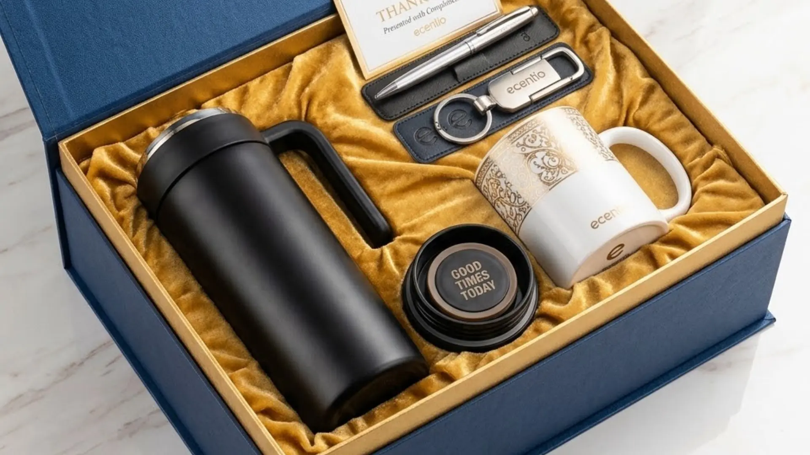

Tumbler Custom Logo: Solusi Hadiah Korporat untuk Klien Perusahaan
Ringkasan
- Tumbler custom logo menggabungkan fungsi praktis dengan media branding perusahaan.
- Proses personalisasi mencakup pemilihan bahan, warna, dan teknik cetak logo.
- Stainless steel merupakan bahan paling umum digunakan karena daya tahannya.
- Anggaran tumbler custom bervariasi tergantung spesifikasi dan jumlah pesanan.
- tumblersouvenir.com menyediakan layanan personalisasi tumbler custom logo untuk kebutuhan korporat.
Daftar Isi
Tumbler custom logo adalah tumbler yang dipersonalisasi dengan logo, warna, atau identitas visual perusahaan, umumnya menggunakan teknik gravir, UV print, atau sablon. Produk ini banyak dipilih sebagai hadiah korporat karena fungsional, tahan lama, dan efektif memperkuat branding perusahaan setiap hari.
Apa Itu Tumbler Custom Logo dan Kenapa Cocok Sebagai Hadiah Korporat?
Tumbler custom logo adalah wadah minum yang didesain khusus dengan tambahan logo atau identitas perusahaan melalui proses cetak atau gravir, sehingga menjadi produk unik yang merepresentasikan brand pemberi hadiah.
Produk ini cocok sebagai hadiah korporat karena menggabungkan dua nilai sekaligus, yaitu nilai fungsional sebagai wadah minum sehari-hari dan nilai branding sebagai media promosi pasif. Setiap kali penerima menggunakan tumbler tersebut, baik di kantor maupun di luar ruangan, logo perusahaan ikut terlihat oleh orang di sekitarnya.
Dibandingkan merchandise lain seperti pulpen atau notes yang cenderung cepat habis atau hilang, tumbler memiliki usia pakai yang jauh lebih panjang. Hal ini menjadikan tumbler custom logo sebagai investasi branding yang lebih efisien dalam jangka panjang.
Bagaimana Proses Personalisasi Tumbler untuk Perusahaan Berlangsung?
Proses personalisasi tumbler untuk perusahaan umumnya dimulai dari pemilihan desain dan logo, dilanjutkan penentuan bahan serta teknik cetak, sebelum masuk ke tahap produksi dan quality control sebelum pengiriman.
Tahap awal biasanya melibatkan diskusi kebutuhan, seperti jumlah unit, warna korporat, serta posisi logo yang diinginkan pada permukaan tumbler. Setelah desain disepakati, tim produksi akan menerapkan teknik cetak yang sesuai dengan material tumbler yang dipilih.
Setelah proses cetak selesai, tahap quality control dilakukan untuk memastikan hasil cetakan logo presisi, warna sesuai brand guideline, dan tidak ada cacat produksi. Barulah setelah itu produk dikemas, umumnya dalam gift box, agar siap diberikan langsung kepada klien perusahaan.

Pilihan Bahan dan Desain Tumbler Custom
Pemilihan bahan dan desain tumbler custom sangat memengaruhi kesan akhir hadiah, baik dari sisi daya tahan produk maupun tampilan visual logo perusahaan yang tercetak.
Stainless Steel vs Bahan Lainnya
Stainless steel umumnya menjadi pilihan utama untuk tumbler custom korporat karena daya tahannya terhadap benturan, kemampuan menjaga suhu minuman, serta tampilan premium yang sesuai untuk hadiah bisnis. Bahan lain seperti plastik food grade juga tersedia sebagai alternatif dengan harga yang lebih terjangkau, meski umumnya memiliki daya tahan dan kesan premium yang berbeda dibanding stainless steel.
Teknik Cetak Logo: Gravir, UV Print, dan Sablon
Teknik gravir menghasilkan logo yang terukir langsung pada permukaan tumbler, memberikan kesan elegan dan tahan lama karena tidak mudah pudar. UV print cocok untuk logo dengan banyak warna atau gradasi, menghasilkan tampilan tajam dan detail. Sementara sablon umumnya digunakan untuk desain logo sederhana dengan jumlah warna terbatas namun tetap efisien dari sisi biaya produksi.
Berapa Kisaran Anggaran untuk Tumbler Custom Sebagai Hadiah Klien?
Anggaran tumbler custom sebagai hadiah klien dapat bervariasi tergantung jenis bahan, teknik cetak, jumlah pesanan, serta kelengkapan kemasan seperti gift box.
Secara umum, semakin besar jumlah pesanan, semakin efisien biaya per unit yang dikeluarkan perusahaan. Selain itu, teknik cetak seperti UV print dengan detail tinggi umumnya memiliki biaya produksi yang berbeda dibanding sablon sederhana. Perusahaan disarankan mempersiapkan anggaran secara realistis dengan mempertimbangkan kualitas yang diinginkan, mengingat hadiah korporat turut mencerminkan citra perusahaan di mata klien.
Manfaat Jangka Panjang Tumbler Custom sebagai Media Branding
Tumbler custom logo memberikan manfaat branding jangka panjang karena digunakan berulang kali oleh penerima dalam berbagai aktivitas sehari-hari, baik di lingkungan kerja maupun di luar kantor.
Setiap penggunaan tumbler menciptakan eksposur brand secara pasif kepada orang-orang di sekitar penerima, termasuk rekan kerja dan klien lain. Dibandingkan iklan konvensional, metode branding melalui hadiah fungsional seperti tumbler cenderung terasa lebih personal dan tidak mengganggu, sehingga persepsi terhadap brand pun menjadi lebih positif.
Tumbler custom logo adalah pilihan hadiah korporat yang menggabungkan fungsi praktis dan nilai branding jangka panjang untuk klien perusahaan Anda. Dengan bahan berkualitas dan teknik cetak yang presisi, hadiah ini mampu memperkuat citra profesional brand Anda setiap hari.